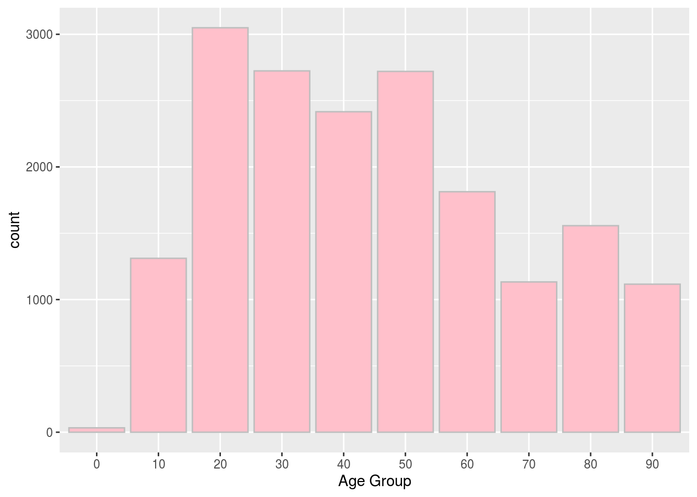
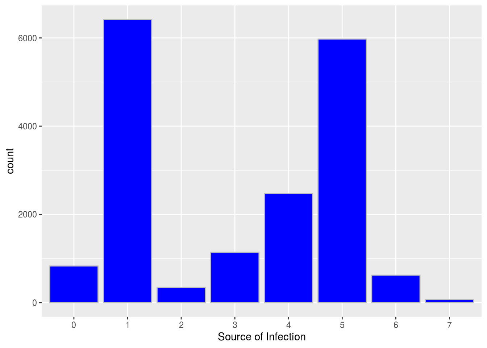

Abstract
Introduction
Dicuss
Code
library(opendatatoronto)
library(dplyr)
##
## Attaching package: 'dplyr'
## The following objects are masked from 'package:stats':
##
## filter, lag
## The following objects are masked from 'package:base':
##
## intersect, setdiff, setequal, union
library(tidyverse)
## ── Attaching packages ──────────────────────────────────────────────────────────────────────── tidyverse 1.3.0 ──
## ✓ ggplot2 3.3.2 ✓ purrr 0.3.4
## ✓ tibble 3.0.3 ✓ stringr 1.4.0
## ✓ tidyr 1.1.2 ✓ forcats 0.5.0
## ✓ readr 1.3.1
## ── Conflicts ─────────────────────────────────────────────────────────────────────────── tidyverse_conflicts() ──
## x dplyr::filter() masks stats::filter()
## x dplyr::lag() masks stats::lag()
# get package
package <- show_package("64b54586-6180-4485-83eb-81e8fae3b8fe")
package
## # A tibble: 1 x 10
## title id topics civic_issues excerpt dataset_category num_resources formats
## <chr> <chr> <chr> <chr> <chr> <chr> <int> <chr>
## 1 COVI… 64b5… <NA> <NA> <NA> <NA> 1 <NA>
## # … with 2 more variables: refresh_rate <chr>, last_refreshed <date>
# get all resources for this package
resources <- list_package_resources("64b54586-6180-4485-83eb-81e8fae3b8fe")
# identify datastore resources; by default, Toronto Open Data sets datastore resource format to CSV for non-geospatial and GeoJSON for geospatial resources
datastore_resources <- filter(resources, tolower(format) %in% c('csv', 'geojson'))
# load the first datastore resource as a sample
data <- filter(datastore_resources, row_number()==1) %>% get_resource()
data
## # A tibble: 17,872 x 18
## `_id` Assigned_ID `Outbreak Assoc… `Age Group` `Neighbourhood … FSA
## <int> <int> <chr> <chr> <chr> <chr>
## 1 143647 1 Sporadic 50 to 59 Y… Willowdale East M2N
## 2 143648 2 Sporadic 50 to 59 Y… Willowdale East M2N
## 3 143649 3 Sporadic 20 to 29 Y… Parkwoods-Donal… M3A
## 4 143650 4 Sporadic 60 to 69 Y… Church-Yonge Co… M4W
## 5 143651 5 Sporadic 60 to 69 Y… Church-Yonge Co… M4W
## 6 143652 6 Sporadic 50 to 59 Y… Newtonbrook West M2R
## 7 143653 7 Sporadic 80 to 89 Y… Milliken M1V
## 8 143654 8 Sporadic 60 to 69 Y… Willowdale West M2N
## 9 143655 9 Sporadic 50 to 59 Y… Willowdale East M2N
## 10 143656 10 Sporadic 60 to 69 Y… Henry Farm M2J
## # … with 17,862 more rows, and 12 more variables: `Source of Infection` <chr>,
## # Classification <chr>, `Episode Date` <chr>, `Reported Date` <chr>, `Client
## # Gender` <chr>, Outcome <chr>, `Currently Hospitalized` <chr>, `Currently in
## # ICU` <chr>, `Currently Intubated` <chr>, `Ever Hospitalized` <chr>, `Ever
## # in ICU` <chr>, `Ever Intubated` <chr>
covid = data %>%
select("Age Group","Reported Date","Source of Infection")
covid = covid %>%
dplyr::filter(!is.na(`Age Group`))
covid = covid %>%
dplyr::filter(!is.na(`Source of Infection`))
covid$`Age Group` <- ifelse(covid$`Age Group` == "19 and younger", 10, covid$`Age Group`);
covid$`Age Group` <- ifelse(covid$`Age Group` == "20 to 29 Years", 20, covid$`Age Group`);
covid$`Age Group` <- ifelse(covid$`Age Group` == "30 to 39 Years", 30, covid$`Age Group`);
covid$`Age Group` <- ifelse(covid$`Age Group` == "40 to 49 Years", 40, covid$`Age Group`);
covid$`Age Group` <- ifelse(covid$`Age Group` == "50 to 59 Years", 50, covid$`Age Group`);
covid$`Age Group` <- ifelse(covid$`Age Group` == "60 to 69 Years", 60, covid$`Age Group`);
covid$`Age Group` <- ifelse(covid$`Age Group` == "70 to 79 Years", 70, covid$`Age Group`);
covid$`Age Group` <- ifelse(covid$`Age Group` == "80 to 89 Years", 80, covid$`Age Group`);
covid$`Age Group` <- ifelse(covid$`Age Group` == "90 and older", 90, covid$`Age Group`);
covid$`Age Group` <- ifelse(covid$`Age Group` == "NaN", 0, covid$`Age Group`);
covid$`Source of Infection` <- ifelse(covid$`Source of Infection` == "Travel" , 0, covid$`Source of Infection`)
covid$`Source of Infection` <- ifelse(covid$`Source of Infection` == "Close contact", 1, covid$`Source of Infection`)
covid$`Source of Infection` <- ifelse(covid$`Source of Infection` == "Institutional" , 2, covid$`Source of Infection`)
covid$`Source of Infection` <- ifelse(covid$`Source of Infection` == "Healthcare" , 3, covid$`Source of Infection`)
covid$`Source of Infection` <- ifelse(covid$`Source of Infection` == "Community" , 4, covid$`Source of Infection`)
covid$`Source of Infection` <- ifelse(covid$`Source of Infection` == "N/A - Outbreak associated" , 5, covid$`Source of Infection`)
covid$`Source of Infection` <- ifelse(covid$`Source of Infection` == "Unknown/Missing" , 6, covid$`Source of Infection`)
covid$`Source of Infection` <- ifelse(covid$`Source of Infection` == "Pending" , 7, covid$`Source of Infection`)
ggplot(data = covid, aes(x = `Age Group` )) + stat_count(color = 'grey',fill = 'pink')
ggplot(data = covid, aes(x = `Source of Infection`)) + stat_count(color = 'grey',fill = 'blue')